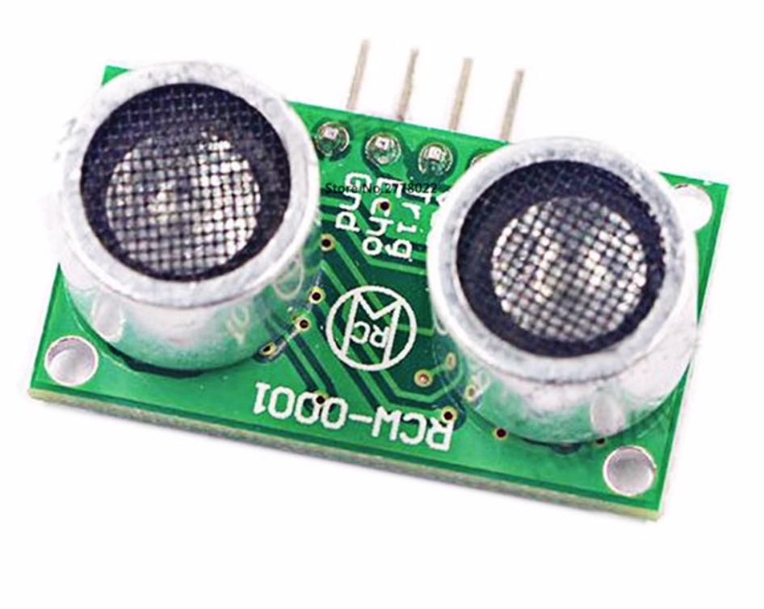

Working with the ultrasonic distance gage
Ultrasonic distance gage ("sonar") is a distance gage based on the principle of measuring the time of a sound wave (about 40 kHz) propagation to the obstacle and back. The sonar can measure the distance up to 1.5 – 3 m with the accuracy of several centimeters.
Distance gage HC-SR04

Installation
The distance gage is attached to the body using double-sided tape. For obtaining acceptable results, the use of vibro-insulation is required. A piece of PU foam may be used for vibro-insulation.
Connection
Connect HC-SR04 to Raspberry Pi according to the connection diagram. Use 1.0 and 2.2 kΩ resistors and any free GPIO pins, e.g., 23 and 24:

Instead of a 2.2 kΩ resistor, you can use two 1 kΩ resistors connected in series.
There are several interchangeable pins GND and VCC 5V on Raspberry Pi. Use the [pinout] (https://pinout.xyz) to find them.
Reading the data
To read the data from distance gage HC-SR04 library for working with GPIO is used – pigpio. This library is pre-installed in the Clever image, starting with version v0.14. For older versions of the image, use an installation guide.
To work with pigpio, start appropriate daemon:
sudo systemctl start pigpiod.service
You can also enable pigpiod auto launch on system startup:
sudo systemctl enable pigpiod.service
Thus, it becomes possible to interact with the pigpiod daemon from Python:
import pigpio
pi = pigpio.pi()
See detailed description of Python API in
pigpiodocumentation.
An example of the code for reading data from HC-SR04:
import time
import threading
import pigpio
TRIG = 23 is the No. of the pin connected to the Trig contact of the distance gage
TRIG = 24 is the No. of the pin connected to the Echo contact of the distance gage
pi = pigpio.pi()
done = threading.Event()
def rise(gpio, level, tick):
global high
high = tick
def fall(gpio, level, tick):
global low
low = tick - high
done.set()
def read_distance():
global low
done.clear()
pi.gpio_trigger(TRIG, 50, 1)
done.wait(timeout=5)
return low / 58.0 / 100.0
pi.set_mode(TRIG, pigpio.OUTPUT)
pi.set_mode(ECHO, pigpio.INPUT)
pi.callback(ECHO, pigpio.RISING_EDGE, rise)
pi.callback(ECHO, pigpio.FALLING_EDGE, fall)
while True:
# Reading the distance:
print read_distance()
Filtering the data
To filter (smooth out) the data and delete emission [Kalman filter] (https://ru.wikipedia.org/wiki/Фильтр_Калмана) or a simple median filter can be used. An example of median filtering implementation:
import collections
import numpy
# ...
history = collections.deque(maxlen=10) # 10 - количество сэмплов для усреднения
def read_distance_filtered():
history.append(read_distance())
return numpy.median(history)
while True:
print read_distance_filtered()
An example of charts of initial and filtered data:
The source code of the ROS-node used for building the chart can be found on Gist.
Distance gage RCW-0001

Ultrasonic distance gage RCW-0001 is compatible with distance gage HC-SR04. Use the instruction above to connect and work with it.
Flight
An example of a flight program with the use of simple_offboard, which makes the copter fly forward until the connected ultrasonic distance gage detects an obstacle:
set_velocity(x=0.5, frame_id='body', auto_arm=True) # flying forward at the velocity of 0.5 mps
while True:
if read_distance_filtered() < 1:
# if the obstacle is closer than 1 m, hanging on the spot
set_position(x=0, y=0, z=0, frame_id='body')
rospy.sleep(0.1)